Store screenshots in every language your app has.
You write one Maestro flow, in English. shotfleet runs it in every language your app has, on iOS and Android, and checks every screenshot. It’s a command-line tool for your Mac that makes the App Store and Google Play screenshots for you, on top of Maestro, the UI-flow tool.
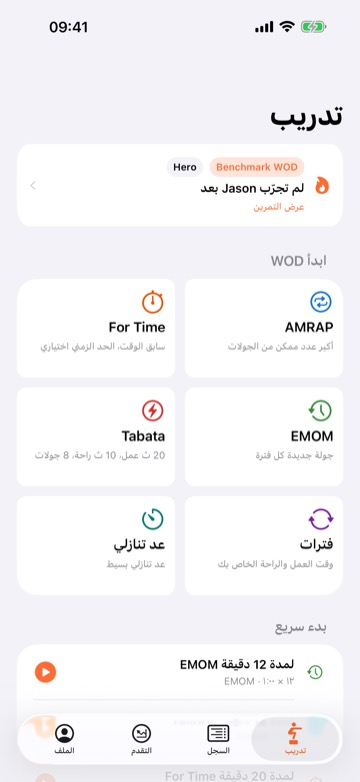
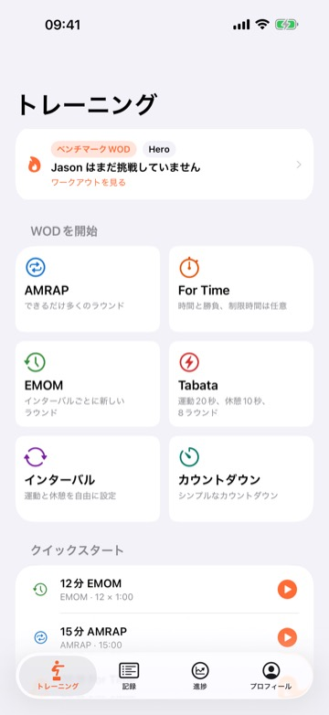
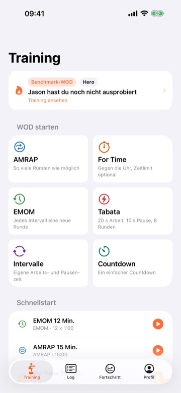
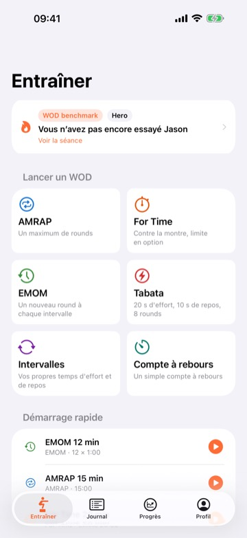
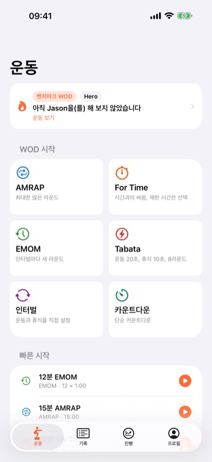
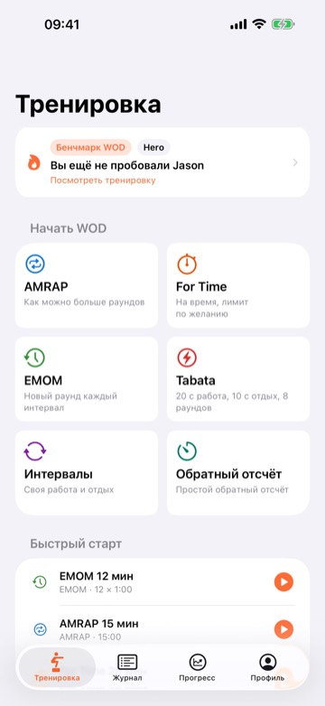
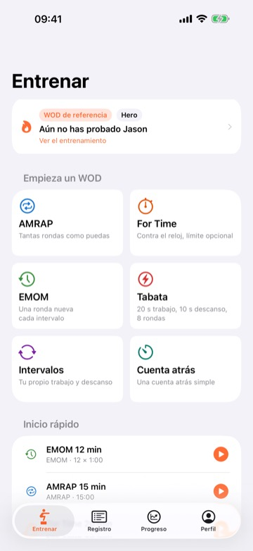
+11
more languages in the same runThat’s seven of the 72 screenshots from one run on my own app, WOD Tracker: 18 languages × 4 screens on an M1 Pro. I didn’t add any code to the app for shotfleet. The one fix I made in it came from what the run found (further down). It all happens on your Mac, and your app and screenshots are never uploaded. For Flutter and React Native, I’ve run it on one real Flutter app (wger) and one real Expo app (the obytes template), not yet on other Flutter or React Native apps. Apple silicon Macs only.
New in 0.1.7
checkends with a store coverage table: which language is missing which screenshot size for the App Store or Google Play.check --compareshows what changed since your last release, andexport --print-uploadprints the fastlane command that uploads it.run --retry-failedreruns only the languages that failed, and a busy Mac gets a plain warning instead of a hang.runskips iOS 27.0 simulators by default, because they froze at boot in my runs, and says which runtime it used.
- 18 × 4
- languages times screens in one run: 72 screenshots, one English flow, one Mac
- 9 min · 15 min
- for that one run on iOS and on Android, on my M1 Pro with my app
- 4 languages
- shared one unreachable Next button on Android. English hid it
- 108 of 120
- old App Store screenshots of AnywhereRoles, another of my apps, flagged by
shotfleet check: the captions were translated, but the app under them was still in English
All measured on my own apps. The 9 and 15 minutes were measured on Maestro 2.0.10. I also wrote up how it compares with other tools.
What a run looks like.
On my M1 Pro, with my app, one run of 18 languages × 4 screens took 9 minutes on iOS and 15 on Android. Your Mac and your app will give other times. It boots the simulators, sets the language on each one and takes the screenshots. Then it reads every image back and compares the text with your app’s own strings, so a screen that came out in the wrong language gets caught.
When you’re happy, one command puts the passing App Store and Google Play screenshots into fastlane’s folders.
The first run found a button nobody could reach.
On Android, Japanese, Korean, Chinese and Arabic all got stuck on one onboarding page. The text was taller, the page didn’t scroll, and Next ended up below the bottom of a small phone, so the run could not tap it. English fit, so I’d never noticed.
It was a small fix in my app: I made two pages scroll.
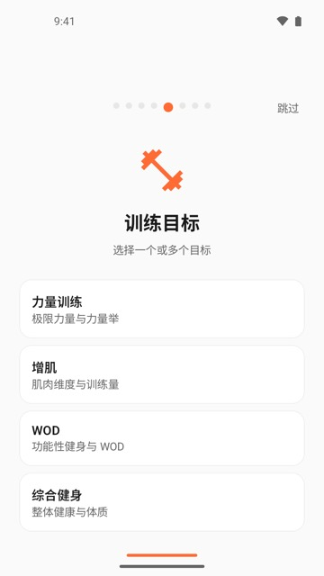
Your flow says Next. In Japanese it taps 次へ.
shotfleet reads the translations compiled into your build and rewrites every text selector. You don’t keep a copy of the flow per language, and you don’t change the app. If two words clash in a language, it warns you before anything runs.
- Your flow
- tapOn: "Next"
- German
- tapOn: '(Nächste|Weiter)'
- Japanese
- tapOn: '次へ'
- Turkish
- tapOn: 'İleri'You get a warning before the run: it also means "Advanced".
One flow, not eighteen.
After install, setup is shotfleet init and a two-line config. Your Maestro flow stays in English, and it’s the only thing you have to maintain.
shotfleet.toml [ios] app = "MyApp.app"
iOS, Android, and the bigger screens.
Both platforms from one config and one flow, plus the sets the stores ask for.
It doesn’t try to do everything.
shotfleet makes the correct raw screenshots and stops there. Frame and upload them with whatever you already use, then run the check on the result.
What it saves you
There are other ways to make these screenshots, and some of them are free. This is what changes when you use shotfleet instead.
- Without it, you write UI-test code for fastlane snapshot and screengrab, and iOS and Android each need their own. With shotfleet, you write one Maestro flow in English, and it works on both platforms.
- Without it, you add something to your project: a UI-test target for fastlane, or a few lines in the app for simshot, which is iOS only. With shotfleet, nothing in your app’s code changes.
- Without it, every language you add is one more set of screenshots to make. With shotfleet, the same flow runs in every language. On my M1 Pro, with my app, one run of 18 languages × 4 screens took 9 minutes on iOS and 15 on Android.
- Without it, a screenshot in the wrong language can reach your store listing, and you may only find out later. With shotfleet,
checkreads every screenshot before you upload. It flags the wrong language, blank screens and sizes the stores don’t accept. - On my first run, the Next button on one onboarding page was out of reach in Japanese, Korean, Chinese and Arabic on a small Android phone. The English screenshots looked fine, so I hadn’t noticed. The run got stuck on that page, and that’s how I found it.
ButterKit and AppScreens do a different job: frames and captions, not language checks. If your app has only one or two languages, you probably don’t need shotfleet. The details are on the comparison page, along with who shouldn’t buy it.
What my other apps look like in five languages.
Besides AnywhereRoles further down, I have two other apps in the stores. These are their real store screenshots, not shotfleet output: one screen in five languages. I’m showing them for what localized store screenshots look like, not what shotfleet can do.
A real app: AnywhereRoles.
Unlike the store screenshots just above, these are real shotfleet output, only made smaller for the web. On 2026-10-06 I ran shotfleet 0.1.4 on AnywhereRoles, also my app: 120 Android screenshots (15 languages × 8 screens) on 1 emulator in 1826 s with 0 retries, and 108 iPhone screenshots (18 languages × 6 screens) on 2 iPhone 17 Pro Max simulators with iOS 26.4 in 3420 s. My Mac was heavily loaded and short of memory, so shotfleet used 2 simulators instead of 4, and ja, tr and zh-Hans each needed a second try. Check found 0 problems in both.
Before this run, check on the old Google Play screenshots I had made for it found 127 problems. 103 of them were translated captions over an app still in English: I had made one English capture and only translated the captions. Of the other 24, 15 were false “missing” lines from a bug in how 0.1.4 read fastlane supply’s file names (fixed in 0.1.6), and 9 were others. That was my mistake, and it’s why I recaptured every language. To be fair, writing and debugging the Android flow took me several failed runs before this one.
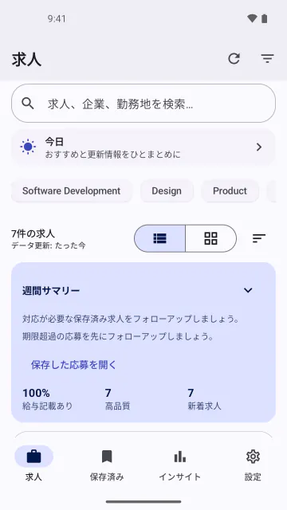
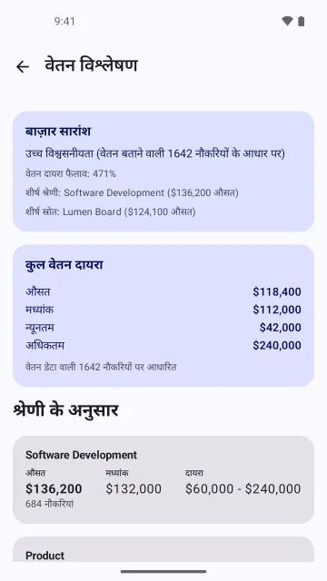
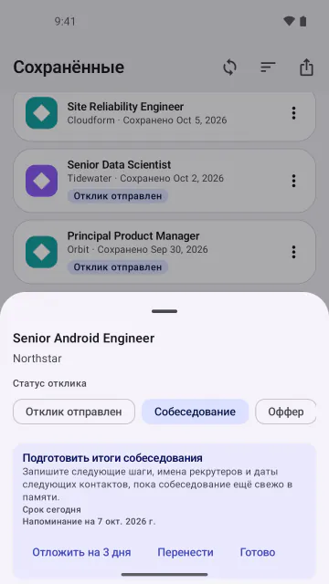
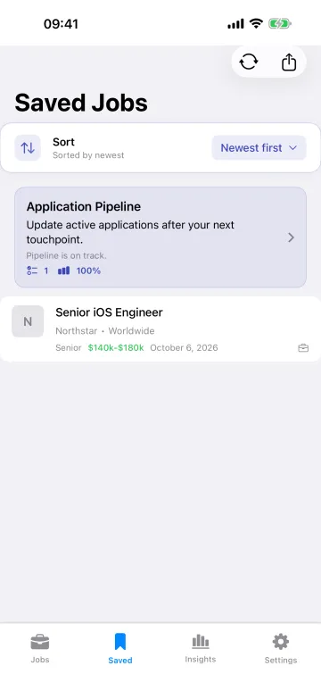
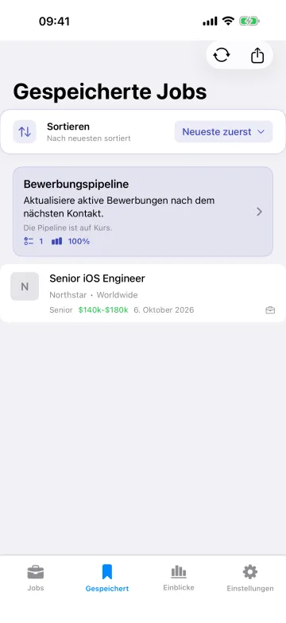
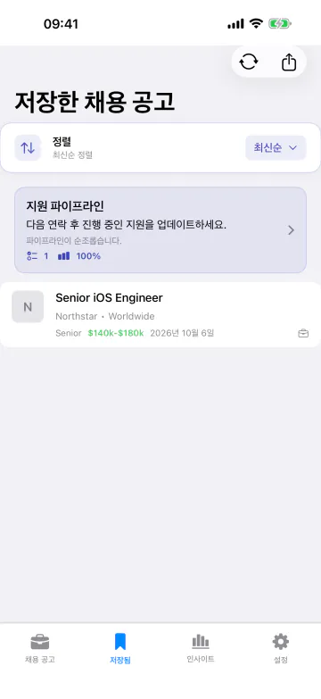
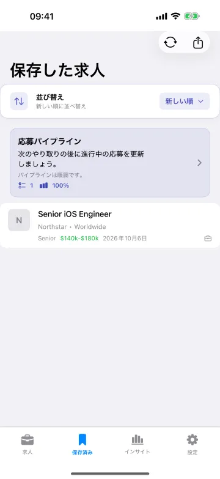
Another one: Kuokka.
Kuokka is my Hacker News reader. On 2026-10-07 I ran shotfleet 0.1.5 on it: 30 iPhone screenshots (6 languages × 5 screens) on 1 iPhone 17 Pro Max simulator with iOS 26.4, in three runs of two languages, 0 retries, 154 s, 132 s and 252 s. Check found 0 problems in all three (the check reads the pictures; it does not prove that every tap hit the right button). It was a debug build (2.0.14) from a branch I hadn’t released, not the App Store version, and the runs were the third go: my first flow tapped the wrong spots, my second failed on a tap point I wrote wrong (94.5%), and both logs are in the record.
The content is live Hacker News at the moment of capture. The feed and comment screens show real people’s usernames, comments and other companies’ logos, so I’m not putting them on this page. The six below are the Radar and Account screens, which have none. They are 6 of the 30, picked by me after looking at all of them.
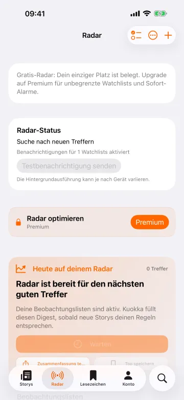
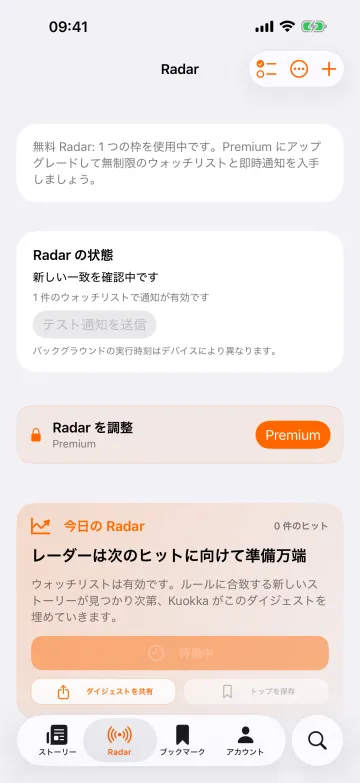
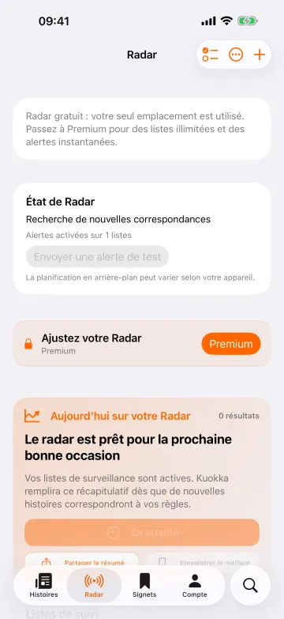
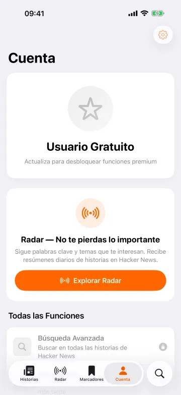
On Android I ran shotfleet 0.1.6 on 2026-10-08, on a debug build of Kuokka 2.0.15 from main. That is a different build from the iPhone frames above, which are 2.0.14. It was 1 emulator and two runs of three languages, 5 screens each, 30 screenshots, 0 retries, 139 s and 126 s. Check found 0 problems in both runs. It worked with the APK and also with the app’s strings.xml file, and both gave 0 problems. Maestro 2.0.10 saves no screen hierarchy on Android, so check read the pictures by text recognition, which is weaker evidence. It still doesn’t prove that every tap hit the right button.
None of the 30 show live Hacker News content, because my flow never opens a story, and the flow turns the analytics question down in every language. The six below are 6 of the 30, picked by me after looking at all of them. Some oddities are the app’s own. The Settings screen has a tall blank band above its title and a few lines wrap with one word left over. The Search chips stay in English. Record: research/kuokka-android-run-2026-10-08/
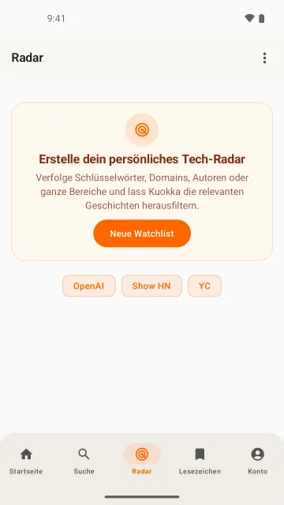
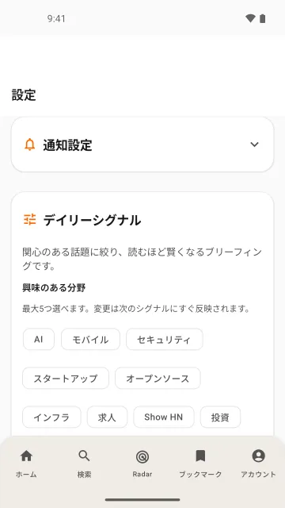
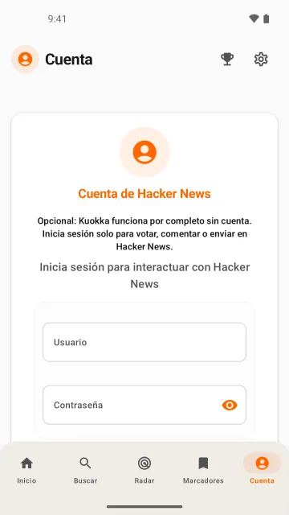
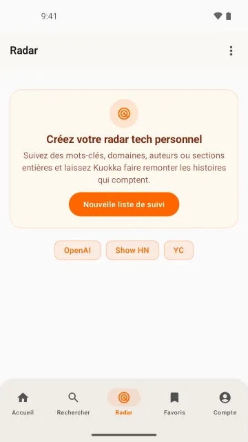
And a third: WOD Tracker.
WOD Tracker is my own CrossFit-style workout timer and log app. On 2026-10-07 I captured it with shotfleet 0.1.6 from a debug build of version 1.6.7, which was in store review at the time, so this is not the store version. iPhone: three runs of two languages (hi and tr, zh-Hans and pl, nl and pt), 4 screens each, 24 screenshots on 1 iPhone 17 Pro Max simulator with iOS 26.4, 0 retries, 366 s, 400 s and 384 s. Android: two runs of three languages (hi, tr and zh-CN, then pl, nl and pt), 6 screens each, 36 screenshots on 1 emulator, 0 retries, 553 s and 528 s. Check found 0 problems in all five runs (the check reads the pictures; it does not prove that every tap hit the right button). On iPhone it also had the app’s view hierarchy to read; Maestro 2.0.10 saves none on Android, so there check read the pictures by text recognition, which is weaker evidence.
In setting up the run, one iPhone attempt came out green (exit 0, 8 of 8 screenshots) but its Hindi Benchmarks frame showed the Train screen, because my tap landed on the tab bar. Check said 0 problems, since that is a valid screen. I caught it by looking at each frame, and those frames are not on this page; the run was repeated. The Android frames show demo data that the app’s debug link seeds, no account; the iPhone frames show the app empty, with no paywall because this build has no store keys. The English that stays is the app’s own content (format names, benchmark names). These twelve are 12 of the 60 captured in the runs that count, picked by me after looking at all of them. Record: research/wod-tracker-run-2026-10-07/
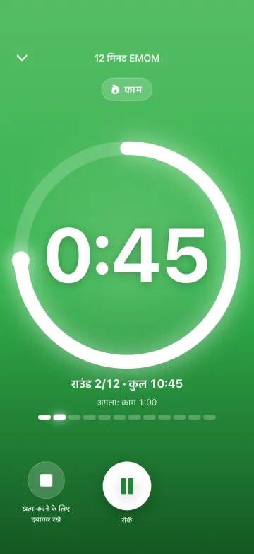
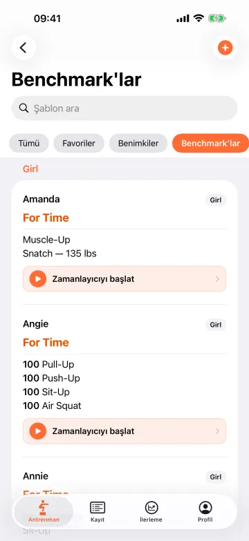
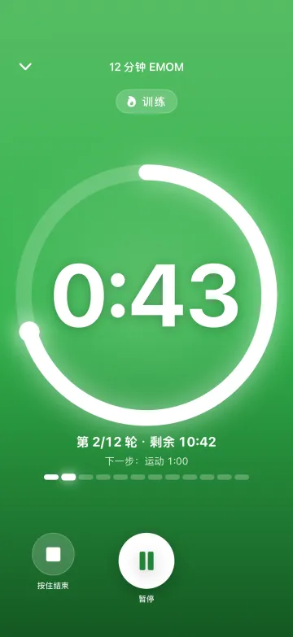
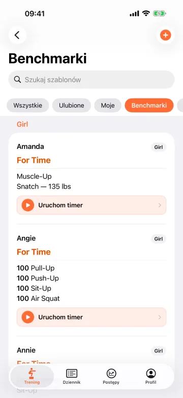
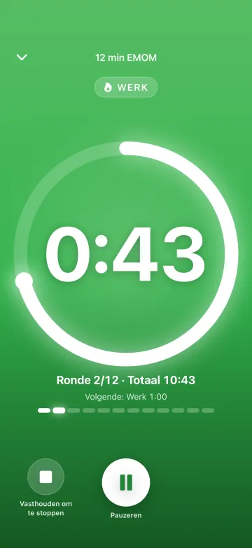
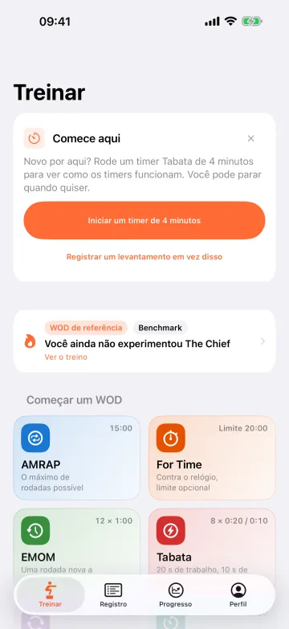
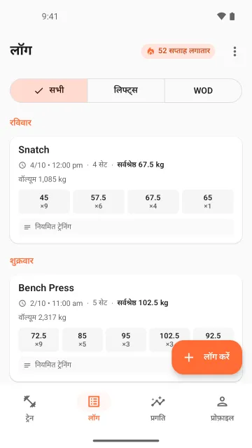
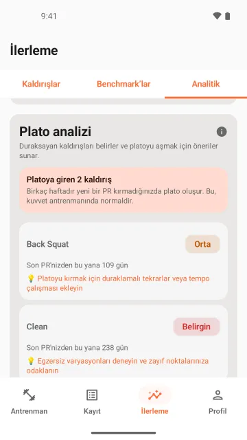
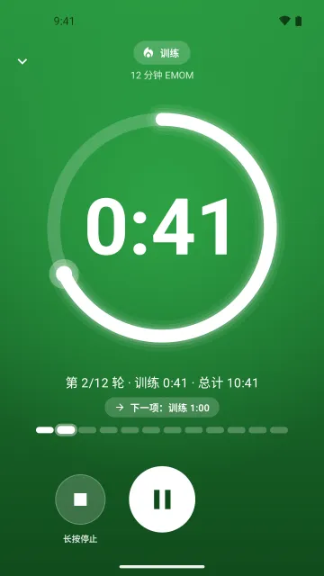
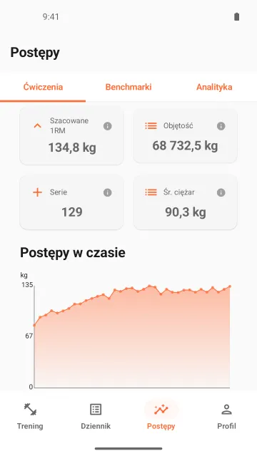
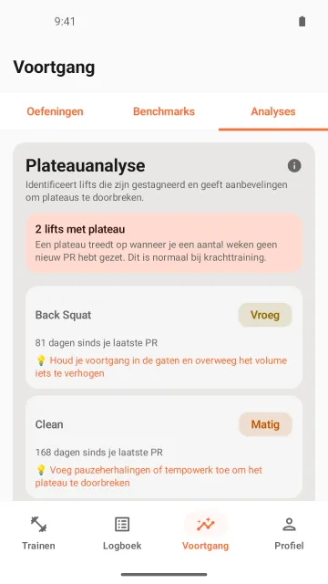
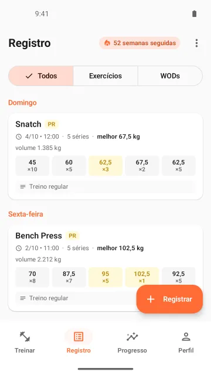
Not for you if…
- you don’t have an Apple silicon Mac. iOS simulators need a Mac, and so does the screenshot check, and there’s no Intel build yet. Built to run on macOS 13 or later on Apple silicon (the build declares 13.0 as its minimum), but I haven't run it on macOS 13. My full runs, with simulators and emulators, were all on macOS 27. On macOS 14 and 15 I ran the installer, doctor and check for version 0.1.6, and on macOS 26.2 in a virtual machine for 0.1.2. Other macOS versions are not tested yet.
- you want frames, captions or store upload. ButterKit and AppScreens do that; shotfleet doesn’t.
- your UI tests already run in every language and you’re happy with them. fastlane snapshot is open source and built for that.
Buy shotfleet
It needs an Apple silicon Mac, Maestro and Java 17+. On iOS it can run your own XCUITest screenshot tests instead of a Maestro flow, and then it needs neither. That part is new in 0.1.6. Built to run on macOS 13 or later on Apple silicon (the build declares 13.0 as its minimum), but I haven't run it on macOS 13. My full runs, with simulators and emulators, were all on macOS 27. On macOS 14 and 15 I ran the installer, doctor and check for version 0.1.6, and on macOS 26.2 in a virtual machine for 0.1.2. Other macOS versions are not tested yet. It reads native iOS and Android strings and Compose Multiplatform; Flutter and React Native work from your translation files (run end to end on a real Flutter app, wger, and a real Expo app, the obytes template, on iOS and Android, 2026-10-03; other apps and bare React Native not yet run).
Licence
$29launch price, first 100 buyers
Then $49 once, per developer. Prices are before VAT or sales tax, which Gumroad adds at checkout where it applies.
- Every language and export to fastlane
- Use it on up to 3 of your Apple silicon Macs; there are spare activations for reinstalls, and if you run out, email hello@shotfleet.com for a reset. Your CI uses none. The spare activations work from 0.1.6; 0.1.5 and older stop at 3. Unlimited apps.
- A year of updates: your key covers every version released within a year of your purchase. Versions you have keep working while macOS and your tools allow, and while they can check the key with Gumroad: when you activate, then about once a week when you use
runorexport. It works offline for 30 days, and a CI key is checked on every run. If Gumroad refuses the key, or can’t be reached for 30 days, you’re back to the free tier. - 14-day refund. Licence and refunds
Checkout is on Gumroad. It gives the $29 price by itself to the first 100 sales, so you see what you’ll pay before you pay. I can’t show you how many are left. Your key comes in the Gumroad receipt email. Then install it:curl -fsSL https://shotfleet.com/install.sh | shshotfleet activate <your key>
Maintain an open-source project, or a student? Email hello@shotfleet.com with a link to your open-source repo or proof that you’re a student, and I’ll send you a 100%-off code.
Need an invoice? Gumroad makes one from your receipt. I don’t take purchase orders.
Free
check,doctorandinit, with no licence. Already use fastlane snapshot or screengrab?checkworks on those screenshots, no Maestro needed. Point it at your fastlane folder and your app build- Capture up to 2 languages with
run, on both platforms and every device size, iPad and tablets too exportto fastlane needs a licence- No account
$ shotfleet check fastlane/ --app MyApp.app